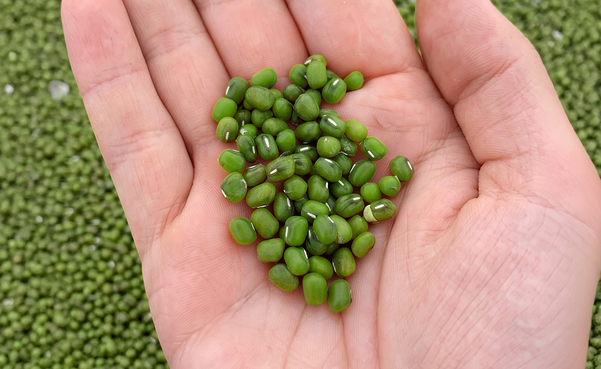

Programa
Canje 2x1
Incluye
- Semilla
Cómo se paga
Devolución a cosecha de dos kilos de grano por cada kilo de semilla entregado.
Se instrumenta además un pagaré por USD 25/ha.
Propuesta comercial
Una alternativa de ciclo corto para sumar a la rotación.

Buena eficiencia hídrica para planteos de primavera y verano.
Buena adaptación a condiciones de calor.
Cierre de surco alrededor de los 20 días desde la siembra.
Siembra y cosecha con equipos convencionales.
| Ventana de siembra | Septiembre a febrero |
|---|---|
| Sistema | Apto para barbecho convencional |
| Densidad objetivo | 300.000 plantas/ha |
| Distancia entre hileras | 17 a 38 cm |
| Profundidad de siembra | 3 a 5 cm |
| Rinde de referencia | 850 a 1.200 kg/ha |
Tres modalidades para elegir según el nivel de servicio y acompañamiento que busque cada productor. Las tres incluyen el compromiso de compra de la producción.
Programa
Devolución a cosecha de dos kilos de grano por cada kilo de semilla entregado.
Se instrumenta además un pagaré por USD 25/ha.
Programa
Programa
Evaluamos el lote según zona, fecha disponible, antecesor y condición del perfil.
Elegimos el programa que mejor encaje con el planteo.
Coordinamos la siembra, con la entrega de semilla y la definición de los aspectos operativos.
Compramos la producción al cierre del ciclo, según las condiciones acordadas.
Escribinos y vemos juntos qué alternativa puede adaptarse mejor a tu planteo.
Simón
Prome AgroNegocios
+54 9 351 862-9374
Información orientativa. Las condiciones comerciales, agronómicas y de compra se confirman al momento de cerrar cada operación.